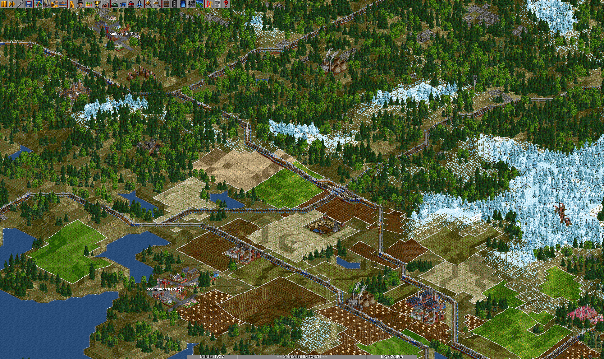
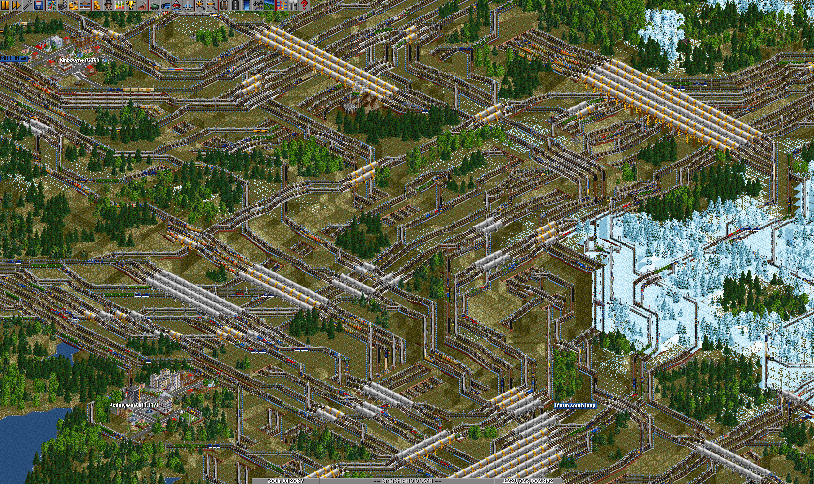

User:V453000
Contact: V453000 [at] openttdcoop [dot] org
I have been around openttdcoop for a long time, built a lot of stuff, made some plans, wrote a lot of blog/wiki articles. Now my number one activity is making NewGRFs.
Blog article about my earlier times around OpenTTD https://blog.openttdcoop.org/2013/09/04/my-openttd-story/
Contents
- 1 NewGRFs I make
- 2 My Blog Articles
- 3 My little concepts which never really got used
- 4 My Ancient Savegames
NewGRFs I make
NUTS Unrealistic Train Set http://dev.openttdcoop.org/projects/nuts
My first NewGRF was this pixel-drawn train set. I started working on it because of missing functionalities in other train sets at that time.
That makes it very focused on functionality, so it lets you do all kinds of stuff like:
- universal tracks allow autoreplacing between any track types
- works with any industry set
- allows for any refit
- huge variety of engines fits every network to the max
- recolouring for city networks
- vehicles expire sensibly
- coloured tracks useful for orientation in your tracks
Related blog articles:
Concept: NUTS as revolution among train sets? http://blog.openttdcoop.org/2011/10/18/nuts-revolution-among-train-sets/
NUTS wiki announcement http://blog.openttdcoop.org/2013/01/12/nuts-unrealistic-train-set-wiki/
NUTS 1st birthday http://blog.openttdcoop.org/2013/03/31/1st-nuts-birthday-is-here/
NUTS 2nd birthday https://blog.openttdcoop.org/2014/03/31/2nd-nuts-birthday/
NUTS 5th birthday, 0.7.9 released https://blog.openttdcoop.org/2017/04/01/brix-0-0-1-nuts-0-7-9-released/
YETI Extended Towns & Industries http://dev.openttdcoop.org/projects/yeti
In order to extend OpenTTD gameplay in functionality, the best way to go is NewGRF industries. (I do not want to code game scripts :P)
YETI is systematic and different to any other - both functionally, and visually. Key features are:
- 17 industries creating a 3-chain system
- Workers cargo - no random productions
- Cargo gets processed over time - dynamically
- 32bpp/ExtraZoom graphics, some with animations
Related blog articles:
First concept: YETI Extended towns and industries https://blog.openttdcoop.org/2012/05/18/next-on-the-list-industries/
Advanced concept: YETI Extended towns and industries' https://blog.openttdcoop.org/2014/04/09/yeti-extended-towns-industries/
YETI 0.0.1 release https://blog.openttdcoop.org/2014/07/13/yetis-have-arrived/
RAWR Absolute World Replacement http://dev.openttdcoop.org/projects/rawr
And because I am quite happy with how the game works, yet I still want to create graphics, I started putting effort towards purely graphical replacement of game sprites.
- no functions means you can use it as static NewGRF
- no functions means it can eventually become a base set easily
- parameters allow to force a landscape visually
- 32bpp/ExtraZoom graphics
Related blog articles: =
RAWR 0.0.1 release blog https://blog.openttdcoop.org/2015/01/27/rawr/
BRIX Realism Is XXXX http://dev.openttdcoop.org/projects/brix
I was not happy enough with RAWR and it was easier to start a new project instead of continuing it, so I started BRIX.
- no functionality means you can use it as static NewGRF
- 32bpp/ExtraZoom graphics
- fully functional 8bpp graphics
- available versions without 32bpp or extra zoom
- focus on x1 zoom level and clarity
- parameters to disable individual features
Related blog articles:
BRIX 0.0.1 Release
https://blog.openttdcoop.org/2017/04/01/brix-0-0-1-nuts-0-7-9-released/
BRIX 0.0.2 Release
https://blog.openttdcoop.org/2017/10/23/brix-0-0-2-is-here/
My Blog Articles
Advanced Building Revues
Advanced Building Revue 01 http://blog.openttdcoop.org/2010/03/09/611/
Advanced Building Revue 02: Splits http://blog.openttdcoop.org/2010/03/25/advanced-building-revue-02-splits/
Advanced Building Revue 03: Path to insanity http://blog.openttdcoop.org/2010/04/14/advanced-building-revue-03-path-to-insanity/
Advanced Building Revue 04: Overflows http://blog.openttdcoop.org/2010/04/26/advanced-building-revue-04-overflows/
Advanced Building Revue 05: Sbahns and city networks http://blog.openttdcoop.org/2010/06/13/advanced-building-revue-05-sbahns-and-city-networks/
Advanced Building Revue 06: Hubs http://blog.openttdcoop.org/2010/07/10/advanced-building-revue-06-hubs/
Advanced Building Revue 07: Stations http://blog.openttdcoop.org/2010/09/28/advanced-building-revue-07-stations/
Advanced Building Revue 08: Overflows II http://blog.openttdcoop.org/2010/11/07/advanced-building-revue-08-overflows-ii/
Advanced Building Revue 09: SRNW Stations http://blog.openttdcoop.org/2011/01/21/advanced-building-revue-09-self-regulating-stations/
Advanced Building Revue 10: Invisible Hubs http://blog.openttdcoop.org/2011/06/02/advanced-building-revue-10-invisible-hubs/
Advanced Building Revue 11: Refit Stations http://blog.openttdcoop.org/2012/02/16/advanced-building-revue-11-refit-stations/
Advanced Building Revue 12: Overflows III http://blog.openttdcoop.org/2012/06/28/advanced-building-revue-12-overflows-iii/
Game Reviews and Stuff
Public server game 186 Review http://blog.openttdcoop.org/2010/06/11/public-server-game-186-review/
ProZone Game 13 - Timed SML http://blog.openttdcoop.org/2010/08/02/prozone-game-13-timed-aka-insane-sml/
ProZone Game 2013 - Timed SML on steroids - absolute insanity http://blog.openttdcoop.org/2013/08/06/dont-try-this-at-home-prozone-game-2013/
Creating Maps
http://blog.openttdcoop.org/2012/10/16/creating-maps/
Servicing and Autoreplace http://blog.openttdcoop.org/2012/11/18/train-servicing-settings/
My little concepts which never really got used
The used concepts are all over our junctionary and archives. :)
Want to split the various TLs on the network? You might find these useful.
An idea how to maximize SML efficiency.
My Ancient Savegames
Here you can download some of my savegames. There are four, TL5game is the oldest one and then it chronologically goes wit hTL3, TL1 and RV game. These games are much like my Top games as they were completely finished. The train games were finished when I just felt like it, the RV game ended when I reached my goal of 5000 vehicles with no jams. Enjoy it :)
TL3 Game
SLH01 - biggest junction on the map:
 


RV Game - how to stuff 5000 RVs on a 256x256
Categories: Active Members